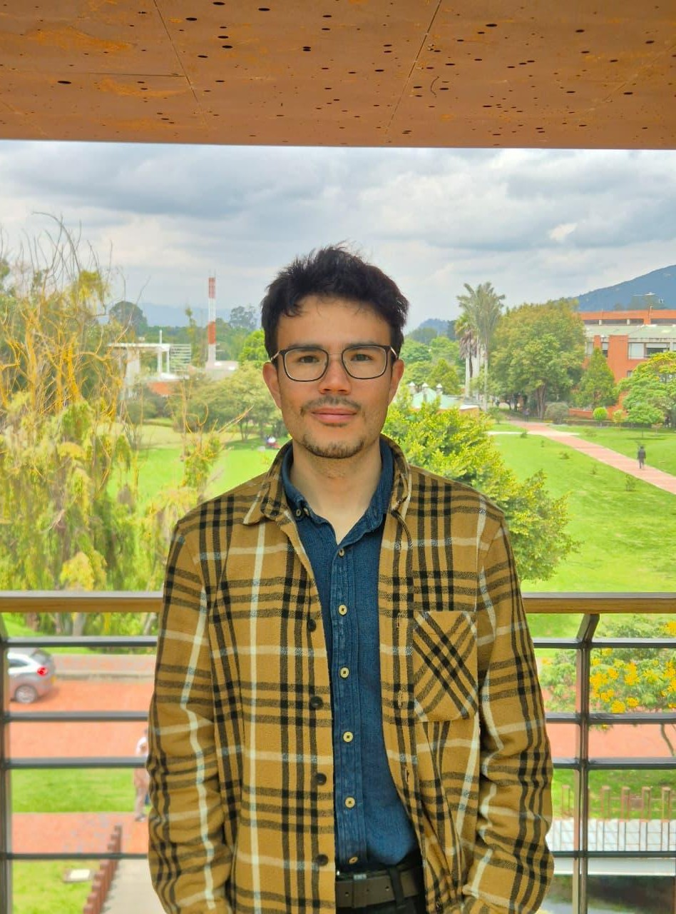

About
Trilingual mechanical engineering student and full-stack developer, recognized with two
academic excellence scholarships. Currently the elected student representative for the
mechanical engineering program committee. Highly capable in creative problem-solving,
careful project planning, and resource optimization. Passionate about system design and
continuous learning. Seeking professional challenges that bridge mechanical engineering
design, the aerospace industry, and software development.
LinkedIn profile
Projects
PowderLab - Mechanical Engineering
PowderLab is a laboratory homogenizer for metal powders, designed to improve sample stability, safety, and mixing efficiency. Its three independent stations can process up to six test tubes at once, with separate speed control for each station. The design also improves sample retention and supports simultaneous mixing conditions. The gallery shows the lab demonstration, upper view, and detailed operation; design sketches are available below.
View design sketches
Open sketches in a new tabWALL-E Automaton Mechanism
Based on Pixar's animated film WALL-E, this group project for a mid-2025
mechanisms class recreates the scene of WALL-E navigating down a river with EVA.
The automaton combines cam followers to create the waves, straight and bevel
gears, and a four-bar mechanism that transfers the driven axle's rotation to
WALL-E's rowing arm. The videos show my CAD assembly and animation alongside
the completed real-life mechanism.
View exploded-view drawing
KnotenSense - GoFest Bogotá 2024
KnotenSense was presented at GoFest Bogotá 2024, the city's entrepreneurship festival. The project is a SaaS platform designed to help businesses manage their social networks. The gallery shows the event announcement, the KnotenSense booth, and the festival venue.

Covid-19 analysis - Julia
Covid-19 analysis is a data science project developed with
Julia and based on the MIT course 18.S190. Here I worked
modeling the mechanics of a pandemic through different simulations
and data analysis to create a simple machine learning model
with multivariable calculus using the “gradient descent” technique.
This was done by adapting an SIR system of differential equations
to experimental data generated previously.
See code